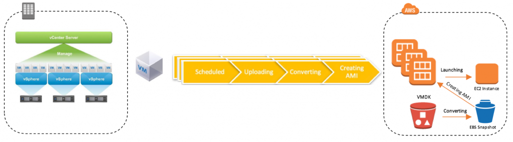

Migrate vSphere VMs to Amazon using AWS Server Migration Service.
{kind=link}
Please follow the below steps to migrate the On-premise VM's to AWS.
IAM Users, Roles, and Service Accounts
We’re going to need some accounts created to interact with both vSphere and AWS to do our replication and eventually failover. First, go to the IAM portal within AWS to setup some permissions for your SMS connector service. First, create a new user like “sms-account”. Make sure that the user has programmatic access since this account will be used by the connector to make API calls to the AWS services.

On the permissions screen, select the ServerMigrationConnector permissions. If you’re looking for these permissions search for servermigration in the filter box.

Review your settings and be sure to note down your access key ID and Secret access key. You’ll need these later and can’t retrieve the secret access key again so pay attention!

Next move down to the IAM Roles and create a new role.

Under the role type, find and select the “AWS Server Migration Service”.

Attach the “ServerMigrationServiceRole” policy to this role.

Give the role a name of “sms”. NOTE: You can use any role name you want here, but if it isn’t “sms” then you need to specify this name when you create a replication job. Making this sms makes things simpler.

Once you’ve setup the AWS Permissions, make sure you’ve got an account with administrative permissions in vSphere so you can manage the replication and export from the on-premises side.
Deploy the SMS Connector.
Now that you’ve got permissions all laid out, you’ll want to go to your AWS account and find the AWS Server Migration Service. If you haven’t used it before you’ll click that “Get Started” button on the welcome page.

From there, you’ll get some instructions on deploying an OVA file into your vSphere infrastructure. Download the OVA and install it into your vSphere environment.

Once your OVA has been deployed in vSphere, you’ll want to open a web browser and navigate to the IP address of the AWS-SMS-Connector VM that was deployed with the OVA. You’ll see a page like this one where you can click the “Get started now” button.

After you read through the license agreement you’ll need to set a password for the management console.

After the password is set, you’ll get a screen explaining how you can set some information for the connector appliance. Things like setting a static IP Address etc.

If you want to set a static IP you’ll need to open the VMware console for the machine to get a screen like the one below. You won’t be able to SSH into the machine so the VMware console is critical for this step.

Back to the connector web page. Select whether or not to upload logs and to auto-upgrade the appliance. These are totally up to you.

On the step 5 screen you’ll need to select a region and then enter the access key and secret key for the IAM user we created earlier. You still have those credentials right?

Lastly, enter the vCenter service account with admin permissions in vSphere so that the connector can snapshot, create OVFs etc.

A new screen will be opened to show you the status.

Add a Replication Job.
Now that we’ve got that silly setup stuff out of the way, we can login to the AWS portal and go to the Server Migration Service again. Look under the “Connectors” tab which should show a healthy connector communicating with the AWS SMS service. Click on “Import server catalog” to retreive the list of virtual machines available for replication.

Go to the “Replication jobs” tab and then click “Create replication Job”. You’ll need to select a server from the list that was just imported.

Once you’ve selected the server(s) to replicate, the second step is to determine the license type. I’m providing my own so I selected the BYOL type and then clicked next.

On the next screen we need to select the job type. You can do a migration right from here, but I want to replicate on a schedule. The lowest setting that can be selected is every 12 hours so keep this in mind. You can delay the first replication or start it immediately and then must select an IAM service role. Remember if you used the “sms” role you don’t need to do anything here. I did add a description though. The last option is whether or not to delete the old AMIs when a new replication run is done.

Review the3 settings and get started.

What Happens During this Replication Phase?
Several things are happening during this time. Every twelve hours a snapshot is taken on the vSphere virtual machine. Once the snapshot is taken, an OVF is created and then uploaded to Amazon S3. You can see that in the vSphere console, an export is taking place.

We can see that in S3, I’ve got a new bucket used by the sms role to store this OVF.

Once the OVF has been uploaded, a new AMI is created based on this upload. You can see in your list of AMIs that a new AMI exists named “Created by (sms-job) and then a jobID.

At this point the replication is done. The entire process follows the flow shown below.

It’s important to note what happens after the first replication as well. This process is incremental because the previous snapshot is not deleted until after a new replication process is complete. You can see that I’ve run another replication job and I’ve got two snapshots on my migration instance. Once the full replication has completed, the older, un-needed snapshots are deleted, leaving only the most recent snapshot to prevent a long snapshot chain in our vSphere environment.

If we look in our list of AMIs, we’ll have an AMI for each of the replication runs for this machine unless you selected the option to delete AMIs automatically. If you did that, only the most recent AMI would be available, and would be the only point in time you can recover from.

Migrate
It’s come time to actually migrate our instance to AWS. Remember that replication only happens every twelve hours, so you may have old data ready to migrate. You can power off your VM and then run an on-demand replication first to move things over, but this process does take quite a bit of time, so don’t think it’ll be a quick task before migration, it’s slower than you might think.
Go into your replication jobs and pick an AMI from the run history tab. If you’re deleting old AMIs, only one will be available. If you aren’t, you can select any replication job from the list. Select the “Launch instance” button.

The next screen should look very familiar to you if you’ve deployed EC2 instances from the AWS console in the past. Select the size instance, storage, tags, subnets, VPCs etc just like you’d normally do.

When you’re all done, your server has been successfully migrated to Amazon Web Services and you can decommission your old vSphere vm at your convenience.
Summary
This is a pretty easy to use tool for moving workloads to AWS and the best part is that it’s free. I don’t know that I can suggest using it for mass migrations or for production workloads though, because of how it replicates data to Amazon. Snapping a VM, creating an OVF and converting it every twelve hours leaves a lot of time that changes may occur to your vSphere VM. If you’ve got a long change window where you can do some powered off on-demand replications then this should work pretty well, but i don’t see this happen much for enterprise environments. You may be looking for some third party tools to help out with this that can constantly stream those changes to AWS which would lower the time of the outage window. Hopefully this post helps you understand the capabilities and drawbacks of the AWS SMS solution.